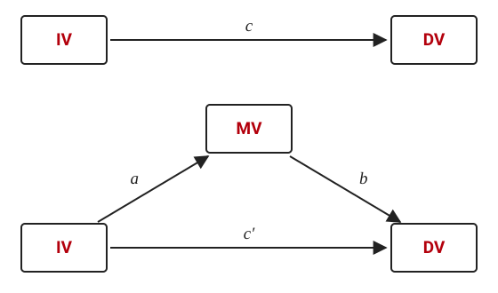
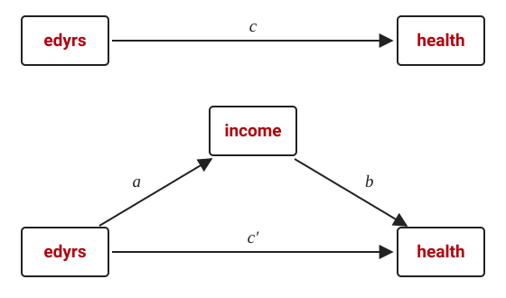

sgmediation2
Sobel-Goodman tests of statistical mediation in linear regression
sgmediation2 conducts Sobel-Goodman tests of statistical mediation for linear regression models. It fits the three regressions the tests need, reports the total, direct, and indirect effects with the proportion of the effect that is mediated, and calculates the Sobel, Aroian, and Goodman tests of the indirect effect. It is an updated version (with permission) of the sgmediation command written by Phil Ender of the UCLA Statistical Consulting Group, adding support for survey weights, multiply imputed data, alternative variance estimators, factor-variable syntax for the control variables, and stored results for bootstrapping.
Installation
net install sgmediation2, from("https://tdmize.github.io/data") replaceTo read the help file in Stata, type help sgmediation2; it is also on this site.
Citation
Please cite the use of sgmediation2 as:
Mize, Trenton D. 2022. “sgmediation2: Sobel-Goodman tests of mediation in Stata.” https://www.trentonmize.com/software/sgmediation2
Background on the tests
A mediating variable (MV) is one through which a focal independent variable (IV) affects the dependent variable (DV): the IV affects the mediator, and the mediator in turn affects the outcome. If that is so, the estimated effect of the IV will be smaller after accounting for the mediator (c′) than in a model without it (c).

The tests are built from three linear regressions:
- Regress the DV on the IV (and any control variables). The coefficient on the IV is c, the total effect.
- Regress the MV on the IV (and controls). The coefficient on the IV is path a.
- Regress the DV on both the IV and the MV (and controls). The coefficient on the MV is path b, and the coefficient on the IV is c′, the direct effect.
The difference between the total and direct effects is the indirect effect: the amount of the IV’s effect that is explained by the mediator. It can be calculated either as the product of the two paths through the mediator, a·b (the “product of coefficients”), or as c − c′ (the “difference in coefficients”); with the same sample in every model the two are identical. Dividing by the total effect gives the proportion of the IV’s effect that is due to the mediator:
\[ \frac{a \cdot b}{c} \;=\; \frac{c - c'}{c} \;=\; 1 - \frac{c'}{c} \]
All three tests calculated by sgmediation2 use the product of coefficients. They differ only in the standard error of a·b:
\[ \text{Sobel:}\quad z = \frac{a \cdot b}{\sqrt{a^2 \sigma_b^2 + b^2 \sigma_a^2}} \]
\[ \text{Aroian:}\quad z = \frac{a \cdot b}{\sqrt{a^2 \sigma_b^2 + b^2 \sigma_a^2 + \sigma_a^2 \sigma_b^2}} \]
\[ \text{Goodman:}\quad z = \frac{a \cdot b}{\sqrt{a^2 \sigma_b^2 + b^2 \sigma_a^2 - \sigma_a^2 \sigma_b^2}} \]
The Aroian and Goodman versions include the product of the variances of the two path coefficients, added and subtracted respectively. Results from all three tend to be similar because that product tends to be small.
Which of the individual results establish mediation is a matter of some debate. Baron and Kenny (1986) require that the IV affects the mediator, that the IV affects the DV without the mediator, that the mediator affects the DV, and that the IV’s effect shrinks when the mediator is added; Preacher and Hayes (2004) keep only the first and last of those; Zhao, Lynch, and Chen (2010) argue that a significant indirect effect is all that is needed, since mediation can occur without a direct effect. sgmediation2 reports every piece, so any of these standards can be applied.
Illustration
Those with more education tend to report better health. A possible mediation explanation is that more education leads to higher incomes, which are in turn associated with better health. The example tests this with Add Health Wave IV data. By default sgmediation2 uses only the observations that are non-missing on every variable in the models; it is best to handle missing data yourself first. Here, listwise deletion:
use "https://tdmize.github.io/data/data/cda_ah4", clear(cda_ah4.dta | Add Health Wave 4 - | )drop if missing(health, edyrs, income, race, woman, age)(131 observations deleted)
The syntax is sgmediation2 depvar [if] [in], iv(varname) mv(varname) [options]. The only additional option used here is cv(), the list of control variables, which accepts factor-variable syntax:
sgmediation2 health, iv(edyrs) mv(income) cv(i.race i.woman age)Model with dv regressed on iv (path c)
regress health edyrs i.race i.woman age, vce()
Source | SS df MS Number of obs = 4,983
-------------+---------------------------------- F(6, 4976) = 56.32
Model | 264.985975 6 44.1643291 Prob > F = 0.0000
Residual | 3902.28234 4,976 .784220727 R-squared = 0.0636
-------------+---------------------------------- Adj R-squared = 0.0625
Total | 4167.26831 4,982 .836464936 Root MSE = .88556
----------------------------------------------------------------------------------
health | Coefficient Std. err. t P>|t| [95% conf. interval]
-----------------+----------------------------------------------------------------
edyrs | 0.093 0.005 16.979 0.000 0.083 0.104
|
race |
Black | -0.111 0.030 -3.747 0.000 -0.169 -0.053
Native American | -0.171 0.145 -1.179 0.238 -0.454 0.113
Asian | -0.201 0.073 -2.735 0.006 -0.345 -0.057
|
woman |
Woman | -0.172 0.025 -6.756 0.000 -0.222 -0.122
age | -0.013 0.007 -1.829 0.068 -0.026 0.001
_cons | 2.817 0.214 13.179 0.000 2.398 3.236
----------------------------------------------------------------------------------
Model with mediator regressed on iv (path a)
regress income edyrs i.race i.woman age, vce()
Source | SS df MS Number of obs = 4,983
-------------+---------------------------------- F(6, 4976) = 171.22
Model | 615297.309 6 102549.551 Prob > F = 0.0000
Residual | 2980328.07 4,976 598.940528 R-squared = 0.1711
-------------+---------------------------------- Adj R-squared = 0.1701
Total | 3595625.38 4,982 721.723279 Root MSE = 24.473
----------------------------------------------------------------------------------
income | Coefficient Std. err. t P>|t| [95% conf. interval]
-----------------+----------------------------------------------------------------
edyrs | 3.836 0.152 25.246 0.000 3.538 4.134
|
race |
Black | -5.922 0.821 -7.215 0.000 -7.531 -4.313
Native American | 0.113 3.997 0.028 0.977 -7.723 7.949
Asian | 4.917 2.030 2.422 0.015 0.937 8.897
|
woman |
Woman | -13.135 0.704 -18.664 0.000 -14.515 -11.755
age | 1.167 0.192 6.086 0.000 0.791 1.543
_cons | -47.033 5.906 -7.963 0.000 -58.612 -35.454
----------------------------------------------------------------------------------
Model with dv regressed on mediator and iv (paths b and c')
regress health income edyrs i.race i.woman age, vce()
Source | SS df MS Number of obs = 4,983
-------------+---------------------------------- F(7, 4975) = 55.12
Model | 299.936161 7 42.848023 Prob > F = 0.0000
Residual | 3867.33215 4,975 .777353196 R-squared = 0.0720
-------------+---------------------------------- Adj R-squared = 0.0707
Total | 4167.26831 4,982 .836464936 Root MSE = .88168
----------------------------------------------------------------------------------
health | Coefficient Std. err. t P>|t| [95% conf. interval]
-----------------+----------------------------------------------------------------
income | 0.003 0.001 6.705 0.000 0.002 0.004
edyrs | 0.080 0.006 13.797 0.000 0.069 0.092
|
race |
Black | -0.091 0.030 -3.061 0.002 -0.149 -0.033
Native American | -0.171 0.144 -1.187 0.235 -0.453 0.111
Asian | -0.218 0.073 -2.975 0.003 -0.361 -0.074
|
woman |
Woman | -0.127 0.026 -4.845 0.000 -0.178 -0.076
age | -0.017 0.007 -2.406 0.016 -0.030 -0.003
_cons | 2.978 0.214 13.906 0.000 2.558 3.398
----------------------------------------------------------------------------------
Sobel-Goodman Mediation Tests
| Est Std_err z P>|z|
---------------------+-----------------------------------------------
Sobel | 0.013 0.002 6.481 0.000
Aroian | 0.013 0.002 6.476 0.000
Goodman | 0.013 0.002 6.485 0.000
Indirect, Direct, and Total Effects
| Est Std_err z P>|z|
---------------------+-----------------------------------------------
a_coefficient | 3.836 0.152 25.246 0.000
b_coefficient | 0.003 0.001 6.705 0.000
Indirect_effect_aXb | 0.013 0.002 6.481 0.000
Direct_effect_c' | 0.080 0.006 13.797 0.000
Total_effect_c | 0.093 0.005 16.979 0.000
Proportion of total effect that is mediated: 0.141
Ratio of indirect to direct effect: 0.164
Ratio of total to direct effect: 1.164To summarize the results:
- Both the a and b paths are significant at p < 0.001: education is associated with higher incomes, and higher incomes are associated with better health, supporting the proposed mediating relationship.
- All three tests of a·b (the indirect effect) in the Sobel-Goodman table have very small p-values, supporting the explanation that income mediates the effect of education on health.
- The effect of education is reduced by about 14% after accounting for income. Theoretically, this suggests that about 14% of the effect of education on health is explained by the indirect effect of education on income.
Survey weights and multiply imputed data
sgmediation2 allows survey weights and multiply imputed data. Specify the prefix you would put on regress in the prefix() option. The Add Health data are already svyset; to use those weights:
svysetSampling weights: weightcross
VCE: linearized
Single unit: missing
Strata 1: <one>
Sampling unit 1: clusterw4
FPC 1: <zero>sgmediation2 health, iv(edyrs) mv(income) cv(i.race i.woman age) prefix(svy:) quietlysvy: regress health edyrs i.race i.woman age, vce()
svy: regress income edyrs i.race i.woman age, vce()
svy: regress health income edyrs i.race i.woman age, vce()
Sobel-Goodman Mediation Tests
| Est Std_err z P>|z|
---------------------+-----------------------------------------------
Sobel | 0.011 0.003 3.837 0.000
Aroian | 0.011 0.003 3.832 0.000
Goodman | 0.011 0.003 3.842 0.000
Indirect, Direct, and Total Effects
| Est Std_err z P>|z|
---------------------+-----------------------------------------------
a_coefficient | 3.690 0.195 18.899 0.000
b_coefficient | 0.003 0.001 3.919 0.000
Indirect_effect_aXb | 0.011 0.003 3.837 0.000
Direct_effect_c' | 0.090 0.007 13.012 0.000
Total_effect_c | 0.101 0.006 16.787 0.000
Proportion of total effect that is mediated: 0.108
Ratio of indirect to direct effect: 0.121
Ratio of total to direct effect: 1.121prefix(mi est, post:) uses multiple imputation estimates as defined by mi set (the post option is required), and prefix(mi est, post: svy:) combines the two. The quietly option used above suppresses the three regression tables and shows only the summary tables.
Alternative variance estimators
The vce() option requests a variance estimator other than the default: vce(robust) for robust standard errors, or vce(cluster clustvar) for cluster-robust ones. Here the standard errors are adjusted for clustering within occupational categories:
sgmediation2 health, iv(edyrs) mv(income) cv(i.race i.woman age) vce(cluster occcat) quietly regress health edyrs i.race i.woman age, vce(cluster occcat)
regress income edyrs i.race i.woman age, vce(cluster occcat)
regress health income edyrs i.race i.woman age, vce(cluster occcat)
Sobel-Goodman Mediation Tests
| Est Std_err z P>|z|
---------------------+-----------------------------------------------
Sobel | 0.013 0.002 5.930 0.000
Aroian | 0.013 0.002 5.915 0.000
Goodman | 0.013 0.002 5.945 0.000
Indirect, Direct, and Total Effects
| Est Std_err z P>|z|
---------------------+-----------------------------------------------
a_coefficient | 3.838 0.312 12.295 0.000
b_coefficient | 0.003 0.001 6.769 0.000
Indirect_effect_aXb | 0.013 0.002 5.930 0.000
Direct_effect_c' | 0.080 0.004 18.574 0.000
Total_effect_c | 0.094 0.005 19.542 0.000
Proportion of total effect that is mediated: 0.140
Ratio of indirect to direct effect: 0.163
Ratio of total to direct effect: 1.163Bootstrapped standard errors and confidence intervals
The indirect, direct, and total effects are returned in r(ind_eff), r(dir_eff), and r(tot_eff), so Stata’s bootstrap prefix can be used to obtain bootstrapped standard errors and confidence intervals for them. The example uses 100 replications so that the page builds quickly; in practice 1,000 replications are generally recommended.
bootstrap r(ind_eff) r(dir_eff) r(tot_eff), reps(100) seed(2026): ///
sgmediation2 health, iv(edyrs) mv(income) cv(i.race i.woman age)(running sgmediation2 on estimation sample)
regress health edyrs i.race i.woman age, vce()
regress income edyrs i.race i.woman age, vce()
regress health income edyrs i.race i.woman age, vce()
Bootstrap replications (100): .........10.........20.........30.........40.........50.........60....
> .....70.........80.........90.........100 done
Bootstrap results Number of obs = 4,983
Replications = 100
Command: sgmediation2 health, iv(edyrs) mv(income) cv(i.race i.woman age)
_bs_1: r(ind_eff)
_bs_2: r(dir_eff)
_bs_3: r(tot_eff)
------------------------------------------------------------------------------
| Observed Bootstrap Normal-based
| coefficient std. err. z P>|z| [95% conf. interval]
-------------+----------------------------------------------------------------
_bs_1 | 0.013 0.002 7.532 0.000 0.010 0.017
_bs_2 | 0.080 0.005 14.984 0.000 0.070 0.091
_bs_3 | 0.093 0.005 17.746 0.000 0.083 0.104
------------------------------------------------------------------------------estat bootstrap then reports the bias-corrected and percentile confidence intervals:
estat bootstrap, bc percentileBootstrap results Number of obs = 4,983
Replications = 100
Command: sgmediation2 health, iv(edyrs) mv(income) cv(i.race i.woman age)
_bs_1: r(ind_eff)
_bs_2: r(dir_eff)
_bs_3: r(tot_eff)
------------------------------------------------------------------------------
| Observed Bootstrap
| coefficient Bias std. err. [95% conf. interval]
-------------+----------------------------------------------------------------
_bs_1 | .01313674 .0001615 .00174404 .0100487 .0166817 (P)
| .0095707 .0165165 (BC)
_bs_2 | .08021862 .0003122 .00535347 .0689332 .0904137 (P)
| .0676583 .08868 (BC)
_bs_3 | .09335536 .0004736 .00526056 .0822798 .1035904 (P)
| .0815194 .1035485 (BC)
------------------------------------------------------------------------------
Key: P: Percentile
BC: Bias-correctedFactor syntax for control variables
As in the examples above, factor-variable syntax is allowed in the list of control variables, so each can be treated as continuous or nominal. It is not allowed for the focal independent variable or the mediator; that reflects a limitation of the method, not of the command. IVs and MVs are limited to continuous or binary variables.
Limitations of the Sobel-Goodman approach
There are many limitations to this approach to mediation (more than are discussed here). A few of note:
- Only continuous or binary focal independent variables can be examined.
- Only continuous or binary mediating variables can be examined.
- Multiple mediating variables cannot be easily incorporated.
- The tests are limited to a single coefficient: there is no clear way to test whether the effect of age is mediated when both age and age² are in the models.
- The approach is limited to linear regression models.
- It is a specialized approach appropriate only for mediation and not for other cross-model comparisons.
These limitations were part of the motivation for the general framework of Mize, Doan, and Long (2019), which compares marginal effects across models of any supported type. That framework is implemented in mecompare, whose mediation examples show it in use.
References
Aroian, L. A. 1944. “The Probability Function of the Product of Two Normally Distributed Variables.” Annals of Mathematical Statistics 18: 265–271.
Baron, R. M., and D. A. Kenny. 1986. “The Moderator-Mediator Variable Distinction in Social Psychological Research: Conceptual, Strategic, and Statistical Considerations.” Journal of Personality and Social Psychology 51(6): 1173–1182.
Goodman, L. A. 1960. “On the Exact Variance of Products.” Journal of the American Statistical Association 55: 708–713.
Keele, L. 2015. “Causal Mediation Analysis: Warning! Assumptions Ahead.” American Journal of Evaluation 36(4): 500–513.
MacKinnon, D. P., C. M. Lockwood, J. M. Hoffman, S. G. West, and V. Sheets. 2002. “A Comparison of Methods to Test Mediation and Other Intervening Variable Effects.” Psychological Methods 7(1): 83–104.
Mize, T. D., L. Doan, and J. S. Long. 2019. “A General Framework for Comparing Predictions and Marginal Effects across Models.” Sociological Methodology 49(1): 152–189.
Preacher, K. J., and A. F. Hayes. 2004. “SPSS and SAS Procedures for Estimating Indirect Effects in Simple Mediation Models.” Behavior Research Methods, Instruments, & Computers 36(4): 717–731.
Preacher, K. J., and A. F. Hayes. 2008. “Asymptotic and Resampling Strategies for Assessing and Comparing Indirect Effects in Multiple Mediator Models.” Behavior Research Methods 40(3): 879–891.
Sobel, M. E. 1982. “Asymptotic Confidence Intervals for Indirect Effects in Structural Equation Models.” Sociological Methodology 13: 290–312.
Zhao, X., J. G. Lynch Jr., and Q. Chen. 2010. “Reconsidering Baron and Kenny: Myths and Truths about Mediation Analysis.” Journal of Consumer Research 37(2): 197–206.